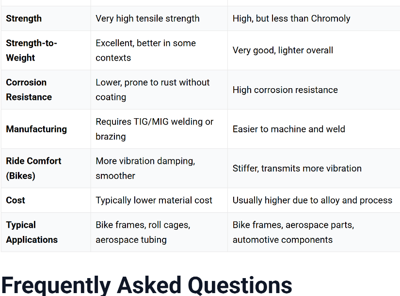
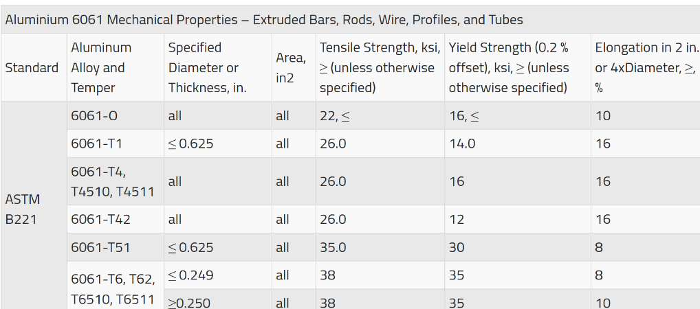
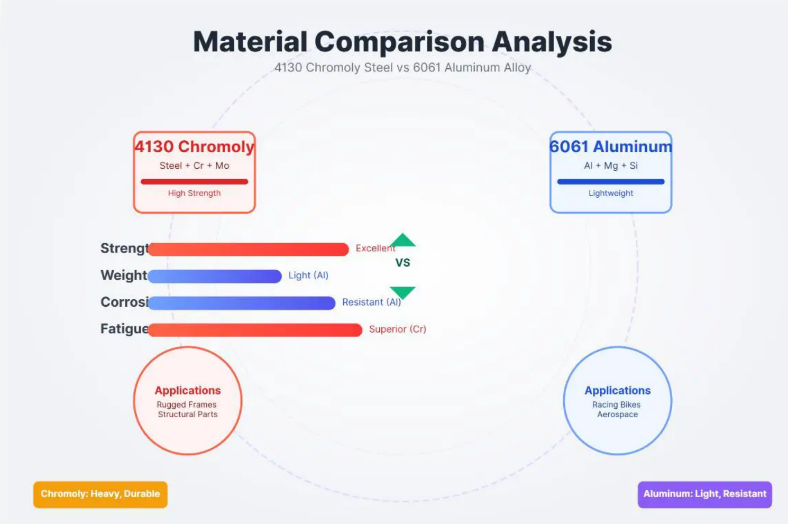
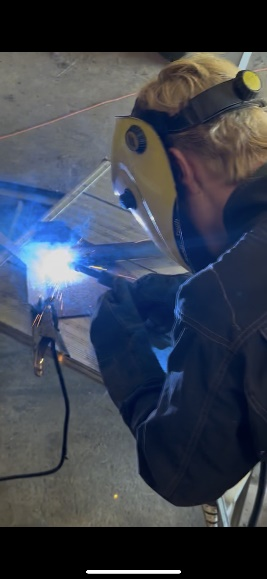

| Contents |
|---|
| Abstract |
| Introduction |
| Analysis and Discussion |
| References |
This article explores how both theoretical engineering principles and practical observations from the making of my own home built, gravity powered formular kart, can be collected to assess methods of chassis design and construction. Using the kart as a practical case study within my research, this investigation considers how material selection and mixed joining methods can influence the efficiency, performance and durability of automotive chassis. Secondary academic research will closely support my practical findings, focusing particularly on comparing the material properties of alloys such as chromoly steel and aluminium, as well as assessing the suitability of different joining methods, including mechanical fastening, adhesive bonding and welding behind lightweight chassis and bodywork development, considering their advantages and limitations within their environment.
This article investigates how material selection and appropriate joining techniques have a direct influence on strength, weight, durability and efficiency for lightweight automotive chassis designs. Reducing an automobiles overall mass can improve efficiency, but this cannot come at the expense of structural security or safety. Ive also included a practical case study within my research, through my home built gravity racer kart, this offer’s a direct answer to what would be otherwise purely a theoretical based argument.
The chassis is the building block for all automotive vehicles, it stands as the fundamental structural integrity of which everything else can then be fitted too to ensure its security and stability. Therefore, it’s vital that the chassis must balance a ratio of good strength, durability and with an ideal low weight property. Some of the best fitted materials include 6061-T6 aluminium along with AISI 4130 chromoly steel, as these specific alloys are most suited and are greatly used within the field of structural engineering. Magazine Editorial Team (2012) states, “aluminium offers the best trade-off between ease of working, strength, and lightness for DIY projects.” Aluminium also offers and optimal yield and density World Material (2020) informs that the “minimum yield strength of 35 ksi (240 MPa), with a density of 2.70 g/cm³ which is almost equal to that of A36 steel. (European Materials Research Society 2023) This strength, combined with its light weight (about 1/3 that of steel), makes it particularly suitable for structural applications where static loads are a concern.” These statistics prove that this is the most effective alloy for stability, however is still light enough to maximise performance.
For more exposed areas of critical load points, chromoly steel has a much higher strength and durability resistance. Ganio-Mego (2023) discovered that chromoly steel was superior in longevity “due to its higher strength-to-weight ratio, making it an ideal metal for steering brake mounts or coulombs.” I decided not to involve Chromoly within my kart due to its high cost and heavier properties. Anon (2025) “4130 Chromoly is typically more expensive due to its alloy composition and manufacturing processes. In contrast, 6061 Aluminium is generally less expensive and widely available, contributing to its popularity in various industries.” For a more optimal chassis, I would use a mix of the aluminium covering the vast majority of the mail railing and rods, with chromoly inserts within the higher stress areas, resulting in a structure security frame with and efficient load distribution.
Methods used in the joining of materials proves to have just as much importance as the materials themselves, particularly in my artefact due to the construction containing a mixture of materials including composites, metals and potentially some foam or wood. Each material having its appropriate or required joining methods which help ensure its security and ultimately safety of a structure, therefore proving to be of great importance within my artefact. For the joining of an ideal metal chassis, varied welding techniques can be used to provide a reliable joint. World Materials (2020) “4130 Chromoly requires precise welding techniques such as TIG or MIG welding. Due to its alloy composition, improper welding can lead to brittleness and weakening.” “Skilled labour is essential to ensure the integrity of the welded joints.” Compared to 6061 Aluminium, which “is compatible with standard welding techniques such as TIG and MIG.” “Aluminium’s excellent formability makes it suitable for extrusion into complex shapes, which is beneficial for mass production of components like bike frames and automotive parts.” Making aluminium a more suited choice for my artefact due to its simpler joining methods. The inclusion of cross-bracing increased lateral stiffness, ensuring the chassis could resist twisting forces during cornering, which is essential for both durability and safety. “A good weld should have uniform bead appearance, complete fusion with adequate penetration, and be free of defects such as porosity, cracks, or undercutting, as these factors are critical to ensuring both structural integrity and long-term safety.” (Quiñonez, 2025)




Other forms of structural bonding, especially seen when a chassis is not made entirely from metal, where welding cannot be performed require epoxy adhesive bonding, which offers a more versatile way of bonding (Granell Heredero and Hernández-Ros Briales, 2023) in a study of suspension for a Formular student car, states “adhesive bonding plays a crucial role in joining dissimilar materials, such as composites and aluminium, with properly surface-prepped joints resisting loads of up to 16,000 N.” This means that adhesive bonding offers a strong yet lightweight way of joining composite materials, providing a quicker and more simple way to join. The bonding is also seen to distribute weight more effectively compared to welds or rivets. Wikipedia’s Adhesive Bonding (2024), summary indicates how “adhesives distribute loads more evenly and reduce stress concentrations,” helping prevent cracking and material fatigue. Overall, for an ideal kart welding joining techniques are to best option for the core of the chassis, for larger and heavier parts which will be the bas of the kart. However, for smaller or composite joins, epoxy bonding ensures that every material is guaranteed to join, making it especially valuable, for my kart as failures in joining has been a common occurrence in previous DIY soap box karts. Andy. W (2024) “Unlike welding, adhesive bonding allows for the joining of various materials, including metals, plastics, composites, and even dissimilar materials. This makes it a preferred method for applications that require the joining of different materials or where welding may not be feasible.”
Overall, this study has concluded that maximising lightweight automotive chassis design requires a fine balance between core material selection and appropriate joining methods/ techniques. Chromoly steel 4130 is seen to provide greater strength ratios and is preferred in areas exposed to greater stress, whereas aluminium alloys, such as 6061-T6 offer a lighter and more affordable option. Equally welding provides an effective, permanent hold for metal joints on the core chassis structure, whereas mechanical fastening and adhesive bonding show a greater versatility when combining mixed materials.
Total Word Count: calculating...